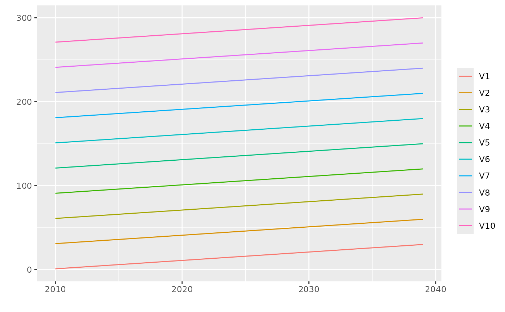
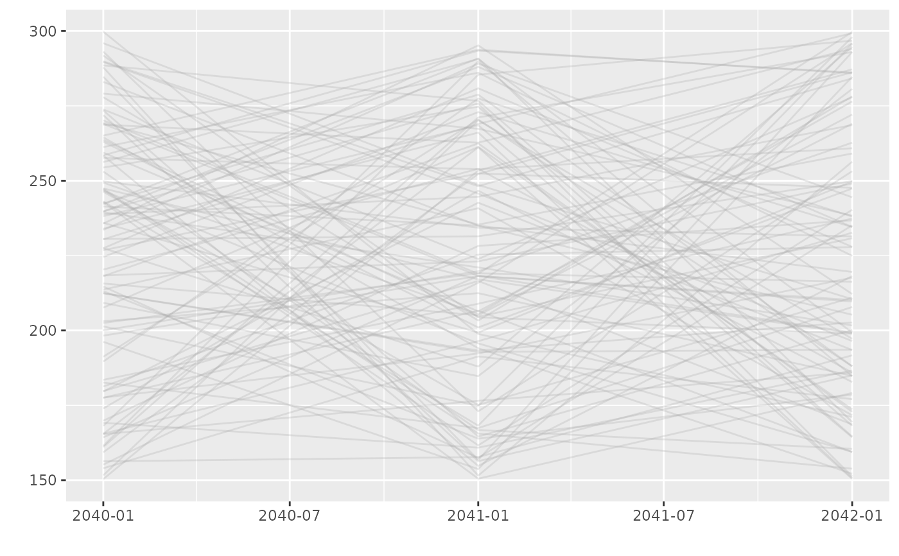

Create a bts object representing a block time-series.
bts(x, dateFrom, date)An object with class "bts" inheriting from
"matrix". This object has a "date" attribute which
is used to identify the beginning of the blocks.
This structure is intended to represent slowly varying
time-series only. So we can plot the column of bts object
against the date vector given as attribute. Since a date
represents the beginning of a block, each polyline (or "curve")
actually shifted by an half-block.
Some matrix operations do not make sense for bts
objects. A "bts" is transformed in an ordinary numeric
matrix by simply using unclass, see examples.
x <- matrix(1:300, ncol = 10)
myBts1 <- bts(x, dateFrom = "2010-01-01")
## plot method
plot(myBts1)

mat <- unclass(myBts1)
class(mat)
#> [1] "matrix" "array"
x <- matrix(150 + 150 * runif(300), ncol = 100)
## with more than 12 columns, the legend is no longer shown
myBts2 <- bts(x, date = c("2040-01-01", "2041-01-01", "2042-01-01"))
plot(myBts2)
